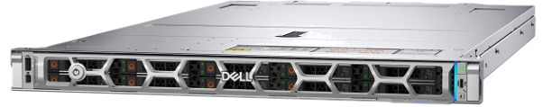

What does it take to give 1,500 people AI?
Suppose a 1,500-person group — a business unit, a division, a mid-size company — is getting AI assistance for everyday work: drafting, lookups, document questions, code help. The instinct is to size for 1,500 users, which points at GPU clusters or a permanent per-seat cloud bill. We tested what the workload actually requires. The answer is a single rack server with no GPUs, and this page shows the measurements.
Watch what 1,500 people actually ask of a server.
Below is one dot per person, animated through a typical working hour. A dot lights up blue only while that person's request is running, and goes dark while they read the answer, think, or do other work. The number to watch is the live count.
The pattern holds across workplaces. About 65% of knowledge workers use AI at work at all, and daily users are roughly 22% of them (Gallup, Q3 2025). Even someone in an active session has a request running only about 11% of the time — the rest is reading and thinking (Microsoft 2025 Work Trend Index). Multiplied out, the simulation above matches the arithmetic: 1,500 people → 975 AI users → 215 active in a given hour → about 24 requests running at once.
Can one server handle 25 requests at once? We tested well past that.
We put a standard Dell PowerEdge R470 on the bench — one Intel Xeon 6 CPU, no GPU — running a 30-billion-parameter open model. Simulated workers sent requests in the same ask-read-think cycle as the animation above, in six everyday patterns combined into five team profiles. We raised the number of simultaneous users step by step and recorded, for every request, how long the answer took to start and how fast it streamed.
Results by team
Each bar is one test run. Green means nearly every request met the response-time target; the marked line is the capacity we quote — the largest group the server handled while staying above the 95% threshold.
Demand meets capacity.
For general office work, the measured capacity is 32 simultaneous requests; the 1,500-person group's busiest moment needs about 25. The bar shows both. Adjust the group size and usage level to test your own situation.
One measurement window, played back.
The feed below replays a measurement window from the benchmark log at — simultaneous users. Every row is a real request: who sent it, how large it was, and how quickly the answer started. The chart alongside shows the server's clock speed and conversation memory over the same window.
What the same workload costs in the cloud.
The chart compares the cumulative cost of owning this server against paying for the same request volume through a cloud API. The request volume follows from the group size and usage level set above.
Adjust cost assumptions
Server costs include purchase price, power with cooling overhead, and administration time. Cloud costs use list prices per million tokens for the selected model.
The tested configuration, and its siblings.
Everything on this page was measured on the Standard configuration below — a stock, orderable 1U server. The Xeon 6 processor's AMX matrix extensions run the model's arithmetic directly on the CPU; no GPU is installed.

| Server | Dell R470, BIOS 1.6.4 |
| CPU | Intel Xeon 6 6761P (Granite Rapids), 64 cores / 128 threads |
| AMX | Yes — BF16, INT8, FP16 |
| Memory | 1 TB DDR5, single NUMA node |
| GPU | None |
| Engine | SGLang on CPU, intel_amx attention backend |
| Model | Qwen3-30B-A3B-Instruct (FP8), 8,192-token requests |
| KV cache | 64 GB allocated |
| OS | Ubuntu 24.04, cores 0–63 bound |
Four sizes
People counts assume the typical usage level from section 01. "Tested" means measured in this benchmark; "Estimated" configurations are scaled from the tested result by core count and frequency, not measured directly.
Published benchmark scores, side by side
| Benchmark | Qwen3-30B (local) | GPT-4o (cloud) | Higher is better → |
|---|
Scores as reported by Qwen using a consistent evaluation across both models (Qwen3-30B-A3B-Instruct-2507 model card, July 2025).
Where this setup is not the right fit
- Workloads that need image understanding — add a vision-capable cloud endpoint or GPU node.
- Sub-second full responses on very long outputs; GPU systems remain faster at raw generation.
- Usage that regularly spikes to many times its baseline; keep a cloud API available for bursts.
- Fewer than about 50 total users; a smaller entry-level server is the better purchase.
- Environments that depend on compliance certifications a cloud provider already holds.
Limits of the test
- Single server only; multi-node deployments were not measured.
- No GPU variants of the same model were tested.
- No retrieval (RAG) pipeline was layered on top of inference.
- Each group size ran for a ten-minute measurement window, not sustained 24/7 load.
- FP8 quantization only; BF16 and INT8 may perform differently.